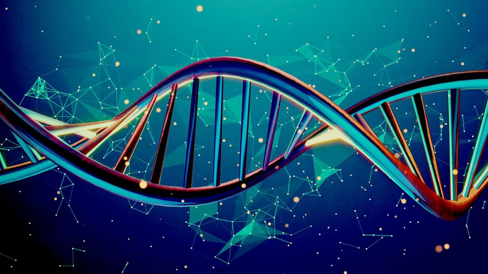

Genetics

Copyrights MIT Department of Biology
Genetics is the branch of biology concerned with the study of inheritance, including the
interplay of genes, DNA variation and their interactions with environmental factors.
*
*
*
*
*
*
Genetics. Scientists have been studying how genetics influences human health for decades. We've made huge
strides, but there's still much that we have yet to learn. The ultimate goal will be to have an increasingly strong
understanding of which genetic variations can lead to disease, and the mechanisms through which those variations
operate. Someday, the hope is that each individual patient's genetic information can help generate targeted advice
about preventative and therapeutic actions they can take to maximize their health. It should be noted, however, that
genetics are only one way in which health can be influenced; environment, behaviors, and other outside factors can be equally important.
*
*
*
*
*
*

Copyrights MIT Department of Biology
Deoxyribonucleic acid (abbreviated DNA) is the molecule that carries genetic information for the development and
functioning of an organism. DNA is made of two linked strands that wind around each other to resemble a twisted ladder — a shape
known as a double helix. Each strand has a backbone made of alternating sugar (deoxyribose) and phosphate groups. Attached
to each sugar is one of four bases: adenine (A), cytosine (C), guanine (G) or thymine (T). The two strands are connected by chemical
bonds between the bases: adenine bonds with thymine, and cytosine bonds with guanine. The sequence of the bases along DNA’s
backbone encodes biological information, such as the instructions for making a protein or RNA molecule.